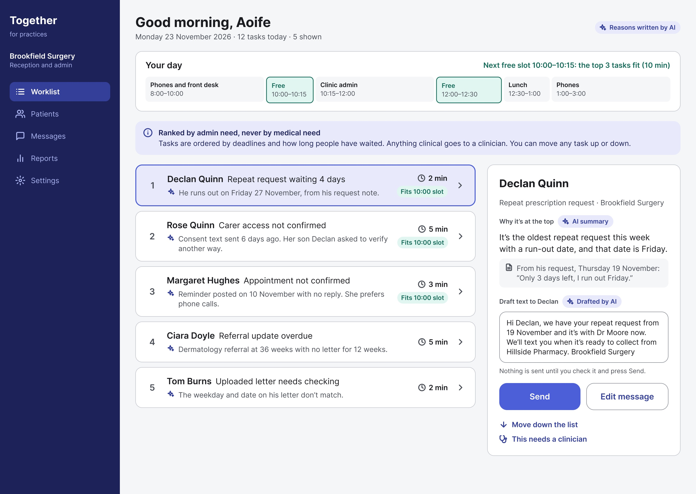
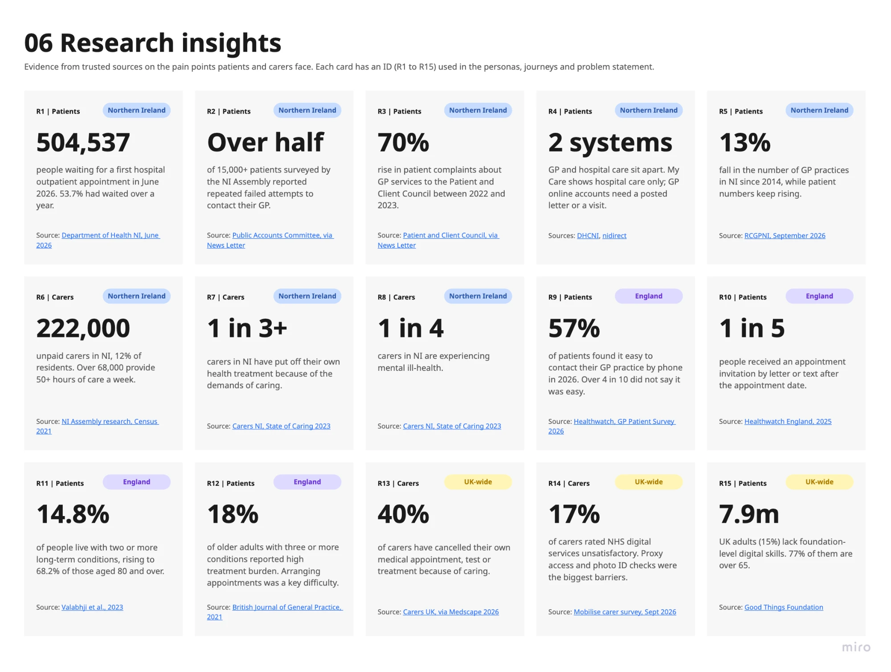
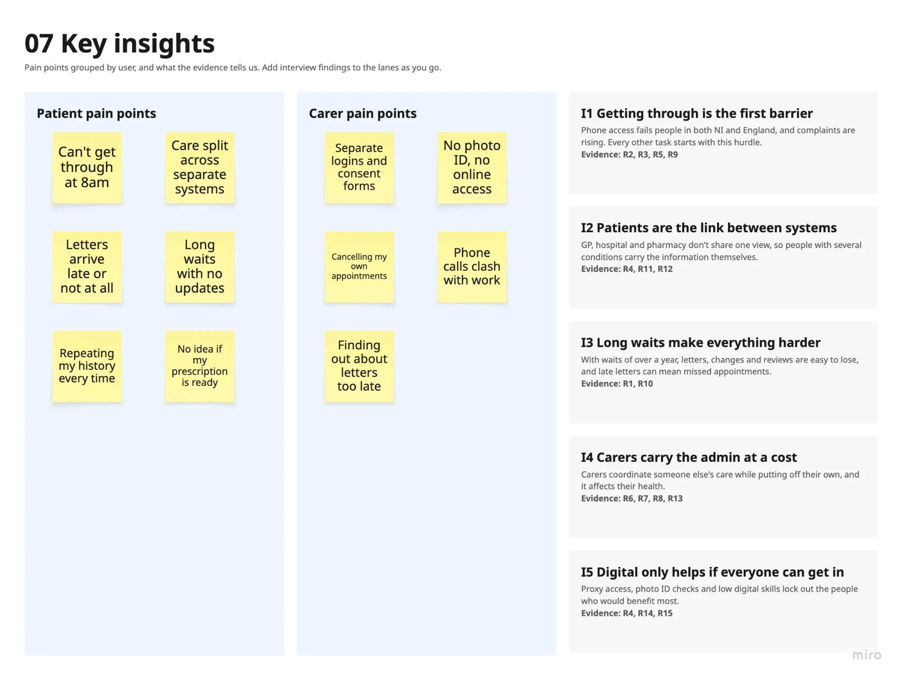
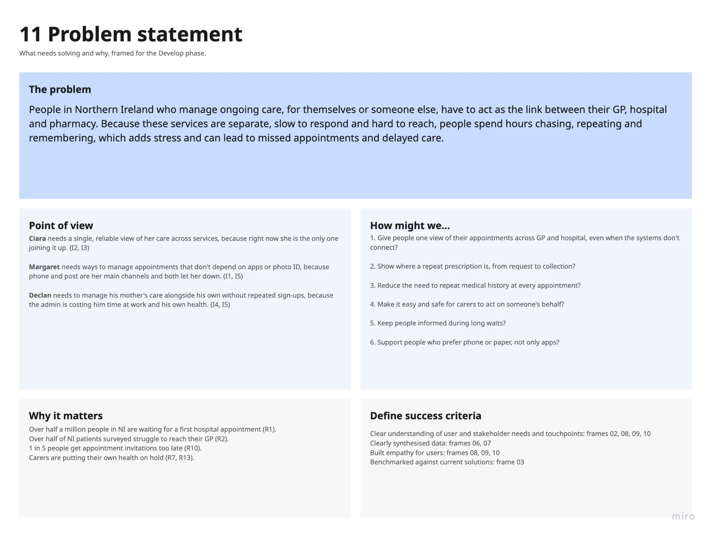
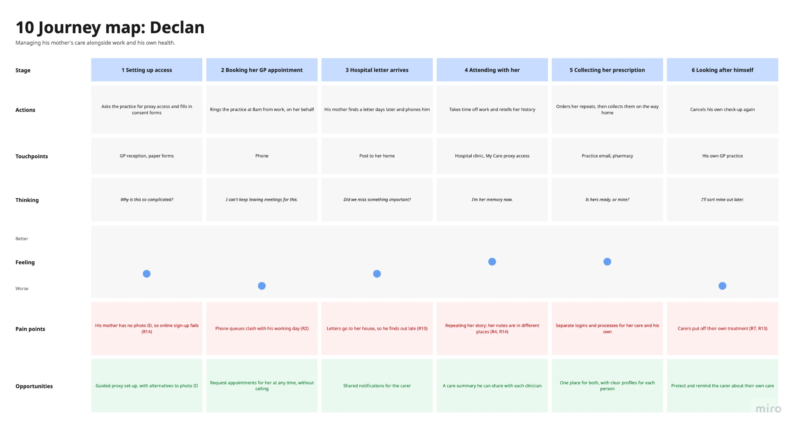
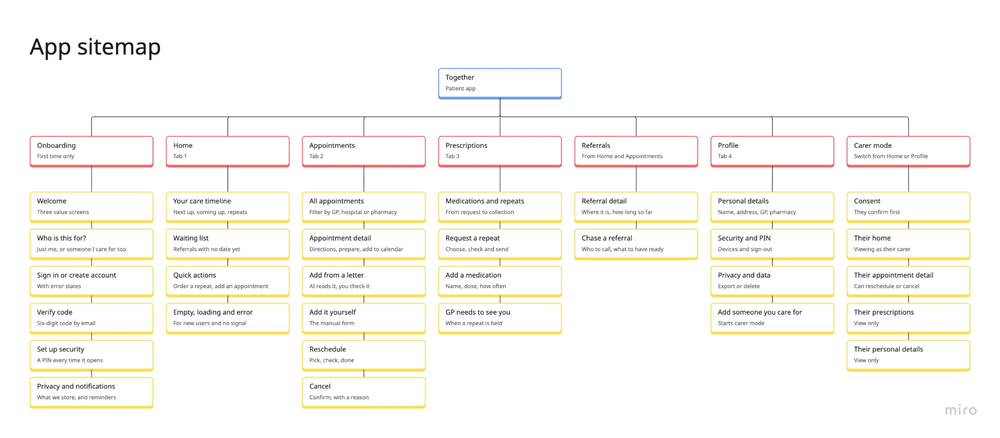
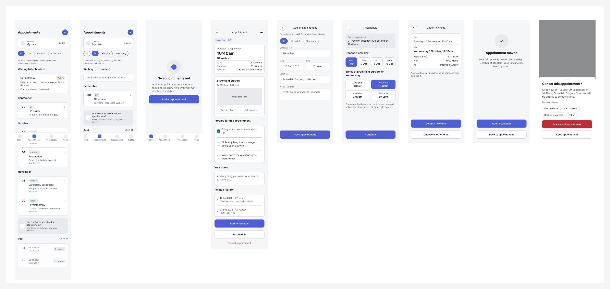
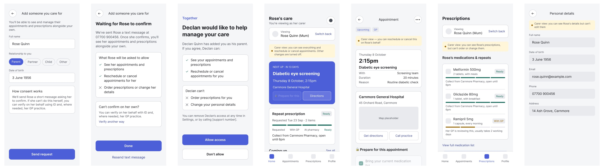
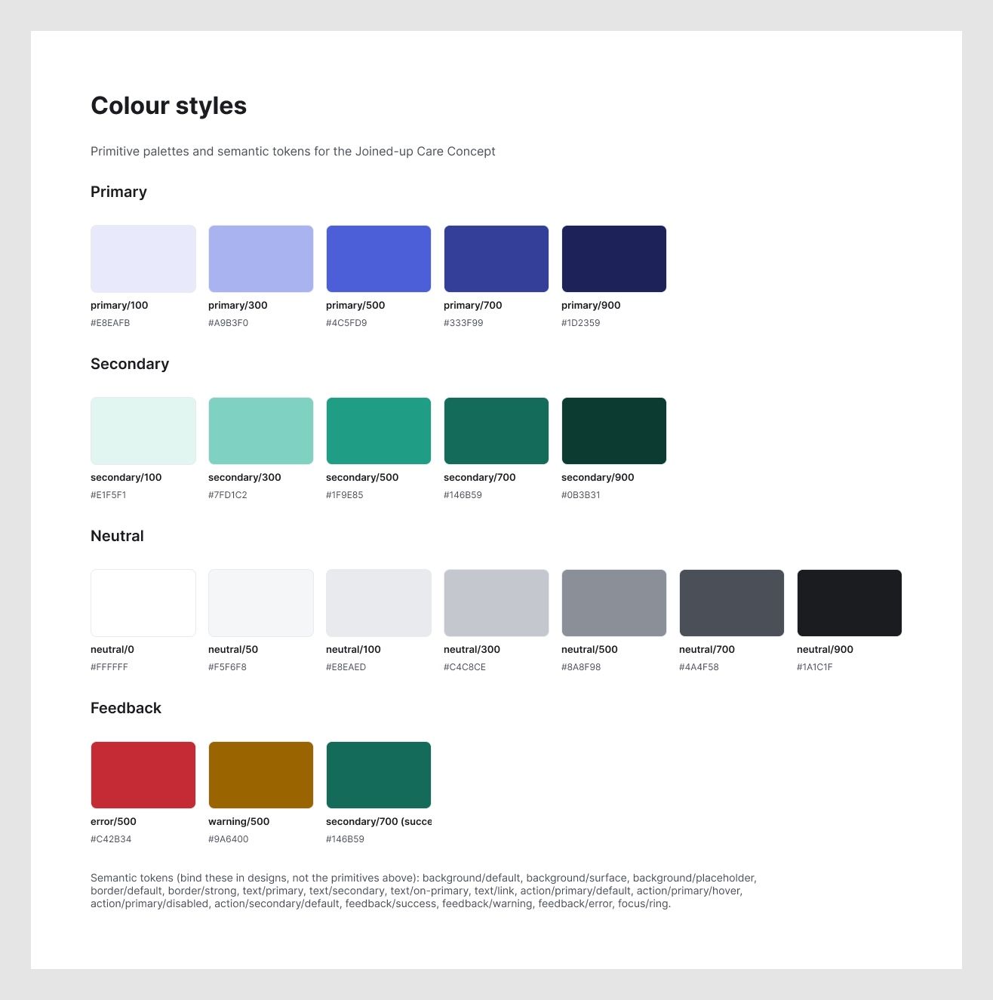
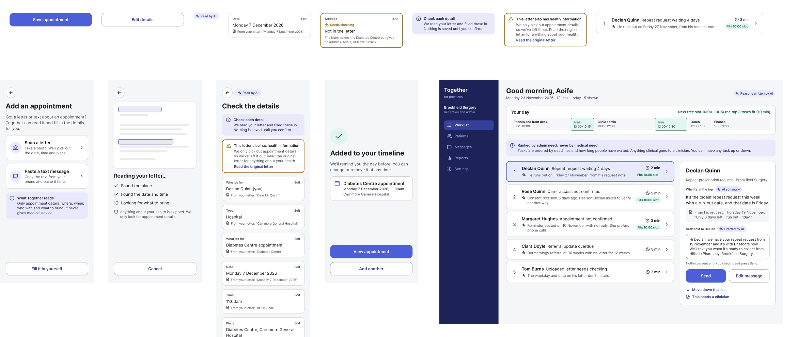

Selected projectsTogether
Together: designing AI for healthcare, where it helps and where it stops
A concept for people in Northern Ireland who manage ongoing care across their GP, hospital and pharmacy, and a service for the practices that look after them.
In progress AI-first

Overview
People in Northern Ireland who manage ongoing care, for themselves or someone else, have to act as the link between their GP, hospital and pharmacy. Because these services are separate, slow to respond and hard to reach, people spend hours chasing, repeating and remembering, which adds stress and can lead to missed appointments and delayed care.
Together is my concept for joining that care up, and a service for the practices that look after those patients. It’s AI-first, but every AI feature has a limit set before any prompting.
Key outcomes so far
- Solo designer on Together, an AI-first concept that joins up GP, hospital and pharmacy care in Northern Ireland
- Designed two AI-assisted flows end to end, reading appointment letters and requesting a GP callback, each with its limits set before any prompting
- 15 research sources synthesised into 5 key insights
- 9 of 10 fictional letters accepted on the first prompt, each judged by me
- 45 lo-fi screens across 7 flows, including a carer mode
My role and responsibilities
- Research and synthesis: desk research from 15 sources, built on my own first-hand experience, turned into insights, journeys and a problem statement in Miro.
- Service design: the sitemap and 45 lo-fi screens in Figma, including a carer mode with consent built in.
- AI experience design: deciding where AI helps and where it doesn’t, then designing two AI-assisted flows end to end.
- Context engineering and validation: writing the context the model works from, and a test set to judge its output against.
- Accessibility: plain language, manual routes alongside every AI step, and states that never rely on colour alone.
The mini case studies below each give the context, then why, how and the outcome.
Mini case study 01
Research and synthesis
Why
Like many people in Northern Ireland, I’ve rung my GP at 8am, waited for a callback with no idea when it would come, and kept track of hospital letters myself. Before designing anything, I needed to know whether that experience matched the evidence.
504,537
people in NI waiting for a first hospital outpatient appointment in June 2026
Over half
of 15,000+ patients surveyed reported repeated failed attempts to contact their GP
222,000
unpaid carers in NI, 12% of residents
1 in 5
people got an appointment letter or text after the appointment date (England)
Sources: Department of Health NI, June 2026; NI Assembly Public Accounts Committee, via News Letter; NI Assembly research, Census 2021; Healthwatch England, 2025.
How
I gathered 15 sources from Northern Ireland, England and the UK in Miro and tagged each one R1 to R15, so every insight, journey and decision could point back to its evidence. No interviews have taken place yet; testing with real people is the next step.
Miro export: 06 Research insights

Miro export: 07 Key insights

Outcome
- Getting through is the first barrier. Phone access fails people in both NI and England, and every other task starts with this hurdle.
- Patients are the link between systems. GP, hospital and pharmacy don’t share one view, so people with several conditions carry the information themselves.
- Long waits make everything harder. With waits of over a year, letters, changes and reviews are easy to lose, and late letters can mean missed appointments.
- Carers carry the admin at a cost. Carers coordinate someone else’s care while putting off their own.
- Digital only helps if everyone can get in. Proxy access, photo ID checks and low digital skills lock out the people who would benefit most.
Miro export: 11 Problem statement

- Give people one view of their appointments across GP and hospital, even when the systems don’t connect?
- Show where a repeat prescription is, from request to collection?
- Reduce the need to repeat medical history at every appointment?
- Make it easy and safe for carers to act on someone’s behalf?
- Keep people informed during long waits?
- Support people who prefer phone or paper, not only apps?
Mini case study 02
Mapping the journey and the service
Why
Before any AI, the service itself had to work: one view of care across separate systems, and a safe way for carers to help.
How
Miro export: 10 Journey map: Declan

Miro export: 12b App sitemap



Outcome
- 45 lo-fi screens across 7 flows: onboarding, home, appointments, prescriptions, referrals, profile and carer mode.
- Carer access only starts once the other person confirms, and a carer can reschedule an appointment but can’t order prescriptions or change personal details.
- A small design system: colour primitives and semantic tokens in Figma, which every hi-fi screen and component is built from.

Mini case study 03
Where AI fits, and where it doesn’t
Why
AI only helps here if people can trust it. Clinical advice and triage were out of scope from the start, so the first question wasn’t what AI could do, but where it should stop.
How
I went back through each “How might we” and asked where AI would genuinely help, and where it would put people at risk.
Outcome
Reading appointment letters
The systems don’t connect, so people add appointments themselves. AI can pull the date, time and place from a letter or text, and the person checks it.
How might we 1
Who staff should help first
AI can rank a practice’s worklist, but only by admin need: deadlines and how long people have waited. Never by medical need, and staff can always change the order.
How might we 5, from the practice’s side
Preparing for an appointment
A model writing someone’s history or questions for their doctor drifts into clinical advice. “Prepare for this appointment” stays a simple checklist the person fills in.
How might we 3
The only way in
AI can’t become another barrier for people who prefer phone or paper. Every AI step has a manual route, such as filling in an appointment yourself.
How might we 6
Deciding how urgent it is
Telling someone to wait for a callback, go to A&E or call 999 is clinical triage. A fixed safety check, agreed with clinicians, comes first instead.
Mini case study 04
Mini case study 04
Getting past the 8am phone queue
Why
In Northern Ireland, people are expected to ring their GP at a set time: 8:00am at some practices, 8:30am at others. So many people ring at once that the line is often busy, and missing it by even a minute means a long queue while the appointments fill up.
Getting through doesn’t end the wait. You’re told to expect a call back from the GP, with no idea when it will come: sometimes it’s quick, sometimes it takes hours.
The first idea was an AI symptom checker that would tell people whether to wait for a callback, go to A&E or call 999. Deciding how urgent something is, though, is clinical triage: out of scope for Together, and exactly where a confident but wrong answer turns into harm. So the idea was reframed around the two real problems, getting through and waiting blind.
How
- Request ahead, instead of ringing at 8am. People describe what’s wrong whenever suits them, and the practice reviews requests in order.
- A fixed safety check first. Set questions, the same for everyone and agreed with clinicians, send anyone with an emergency sign to 999. AI isn’t used here.
- AI helps people describe it, not diagnose it. It suggests what the GP may want to know, then puts the person’s own words in order for the GP. It never gives advice back.
- No more waiting blind. The practice sets a callback window, and people are told when their GP is about to call.
-
Requests are open, so nobody has to ring at 8am.
Step 1 of 6
-
Fixed questions agreed with clinicians. Deciding how urgent it is never goes to a model.
Step 2 of 6
-
AI suggests what the GP may want to know. It never says what it might be.
Step 3 of 6
-
AI puts the person’s own words in order, and each line shows where it came from.
Step 4 of 6
-
The practice sets the window, so people know when to expect the call.
Step 5 of 6
-
The GP marks them as next, and Together sends a heads-up.
Step 6 of 6
Outcome
A concept for the patient side, linked to the practice worklist, where requests and callback windows would land. The safety-check wording would need to be written and signed off by clinicians before anyone used it.
Mini case study 05
Adding an appointment from a letter
Why
Patients are the link between systems, and appointment letters are where that work starts. In the lo-fi design, adding an appointment meant retyping everything from the letter. Reading it for them saves effort, but only if they can trust what it reads.
How
Before writing a prompt, I wrote the context the model works from: the product, the people, the guardrails, the tone of voice and the accessibility rules. It’s the same approach as the CLAUDE.md file behind this site.
## Guardrails (non-negotiable)
1. Logistics only. Extract where, when, who with, what to bring and how to get in touch. Nothing else.
2. Never interpret clinical content. If the letter contains it, set contains_clinical_content to true and leave it out.
3. Never guess. If a detail is missing, unclear or contradicts itself, leave the field empty and say why. A wrong date is worse than no date.
4. Show the source. For every field, quote the exact words it came from.
5. The person confirms. Output is a draft for the person to check, never a saved appointment.

-
Scanning is optional. “Fill it in yourself” is always there.
Step 1 of 4
-
AI picks out the logistics only. Anything about health is skipped.
Step 2 of 4
-
Every field quotes the letter, and gaps are flagged, not guessed.
Step 3 of 4
-
Nothing is saved until the person confirms.
Step 4 of 4
Design decisions
- Every detail shows its source. Each field quotes the letter, so people can check the AI rather than trust it.
- Gaps are flagged, not filled. A missing address says “Needs checking” with an icon and words, never colour alone.
- Health information comes first, and stays out. If the letter has any, a warning sits above the fields and points to the original letter.
- Nothing is saved without a person. The AI writes a draft; the person saves it.
- There’s always another way. “Fill it in yourself” is on the first screen, and “Fill it in myself instead” sits under the save button.
Judging the output
A model that sounds confident can still be wrong, so I judged it against 10 fictional letters and texts, each in a fresh chat so one couldn’t influence the next. Most are deliberately tricky:
- A blood test result inside an appointment letter, which must stay out of every field.
- A weekday that doesn’t match its date, where the right answer is to leave the date empty and say why.
- A letter with no time, which must be left empty, not guessed.
- A rescheduled and a cancelled appointment, where the old or cancelled date must not show as upcoming.
- A prescription text and a waiting-list letter, which aren’t appointments at all.
Each answer passes only if every filled field is right, nothing clinical leaks, nothing is guessed, and every field quotes its source.
A dry run first
Before the real test, Claude answered the whole test set in one chat, after it had already looked at where the prompt was weak. That isn’t a fair test, so none of it counts as a result. It was still useful, because it showed where the prompt and the form had no room for what real letters say.
- No field for who it’s with. “Dr A. Moore” had to go into the service name.
- No place for instructions. “Don’t eat after midnight”, “don’t drive” and “wear loose clothing” were dropped, or pushed into “what to bring” or the checks.
- One letter, one appointment. A second appointment in the same letter became a sentence, not something the person could add.
- Urgent advice looked like any other health information. A letter saying to call 999 got the same warning as a routine blood test result.
- Service names can give a condition away. “Cardiology” and “Diabetic eye screening” are logistics, but they also say something about the person’s health.
// Letter with a blood test result "needs_checking": ["This letter includes information about your health. Please read the original letter."] // Letter saying to call 999 if chest pain comes back "needs_checking": ["This letter includes health advice. Please read the original letter yourself."]
Claude also scored its own answers, and on four letters its verdict disagreed with the answer key. In the real run, every verdict is mine.
Outcome
10
fictional letters and texts, each in a fresh chat
9
accepted on the first prompt
1
rejected: it kept a time when the date couldn’t be trusted
0
prompt changes during the run
On the first prompt, the model kept the blood test result out, refused to guess a date or a time, and recognised the two messages that weren’t appointments. The one rejection was my call, not the answer key’s. The other 10 letters, including urgent 999 advice and a letter with two appointments, are still to be tested.
Where I disagreed with the model
- What the model did
- The letter said “Tuesday 18 November 2026”, but 18 November 2026 is a Wednesday. The model left the date empty and flagged the mismatch, but still filled in the time, 3:15pm.
- Why it sounded right
- It followed the date rule exactly, and the answer key counted it as a pass.
- What I noticed
- If the date can’t be trusted, the time can’t be trusted either, so it shouldn’t have been filled in.
- What I did instead
- I rejected it, a stricter call than the answer key. Leaving the time empty when the date is unreliable is the first change for prompt version 2.
Reflection
Writing the context before writing a single prompt changed how the model behaved. With the guardrails, tone and people set out up front, most of my feedback was about edge cases, not basics. It’s the same approach I now use for everything I build with AI.
Looking ahead
- Test with real people, starting with the letter flow, before claiming it works for them.
- Talk to practice staff before taking the worklist any further.
- Prototype through instruction in Figma Make, so the flow can be tried, not just viewed.
- Take the rest to hi-fi: the timeline, prescriptions, referrals and carer mode.
Next project
Portfolio
Designing and building my portfolio with AI, from template to live site.
View case study